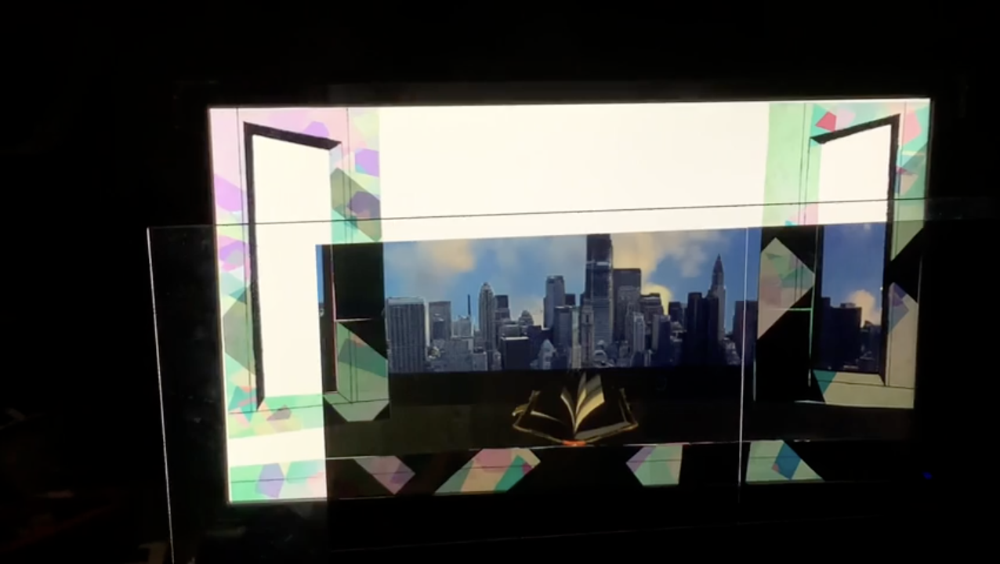

All Works
Filter by Tech/Medium:

Video jigsaw puzzle
After pressing the spacebar, the video is scrambled into a 3×3 grid with each
section randomly flipped horizontally or vertically. Users can restore sections by clicking the
correct half (upper for horizontal, lower for vertical). The constantly changing video content
makes it surprisingly challenging and offers a fresh way to experience moving imagery.

Magic circle ambient art
Ambient audiovisual piece with three evolving patterns: concentric circles,
popping squares, and reactive colorful lines. Loudness and FFT data drive all parameters. Press
spacebar to disable fading and let patterns accumulate into a dense magical-circle drawing.

Universe x Rhythm Survival Game
Hybrid rhythm-survival game with cosmic atmosphere. Combo icons arrive on
beat as “alien attacks.” Correct timing blocks attacks and maintains HP; misses deduct health.
Watch on YouTube ↗

“ (˙◠˙) ” Converter
Anxiety-relief device that converts heart-rate data into calming vibrations,
lights, scents, and uplifting quotes. Multi-sensory feedback to help manage stress in real time.
Watch on YouTube ↗

Onyx Veil - The Abyss of Amnesia
3D animated music video created in Autodesk Maya, inspired by the song “Onyx
Veil - The Abyss of Amnesia.”
Watch on YouTube ↗

Edges highlighted effect using Convolution Kernels
Image-processing algorithm that highlights edges using convolution kernels.
Pokemon card effect using 3D pixels
Recreates the classic Pokémon card holographic shine using 3D pixel
manipulation.

Splitting RGB effect using extracted RGB values
Separates and displaces Red, Green, and Blue channels for a chromatic
aberration/glitch look.

Gothic stained glass windows using Mosaic concept
Generates stained-glass-style artwork by applying mosaic tiling with color
averaging.

Temporal Face-Mapped Video Playback
Maps video frames onto a detected face in real time, creating surreal
face-tracked playback.

Pop Cat Defense: Motion-Activated Gameplay
Motion-triggered defense game featuring the famous Pop Cat meme.

Move to Support Your Idol!
Body movement controls cheering animations to “support” a virtual idol on
screen.

AlchemAR - AR game
Interactive AR platform where users combine chemical elements via printed
markers to trigger real-time 3D chemical reactions and visualizations. Seven elements and ten
reactions implemented.
Watch on YouTube ↗

Rhythm Trainer
Interactive rhythm training device with light and sound feedback built on
Arduino.
Watch on YouTube ↗

Emoji Board
Physical emoji reaction board controlled by buttons or sensors.
Watch on YouTube ↗

Machine Learning: Anime Character || Art Style Generator
Convolutional VAE model that generates new anime characters while preserving
distinct art styles and individuality.

“The Window Seat of Memory” with MemoraLens
Interactive physical installation merging multimedia technology and human
connection to evoke personal reflections on memory and loss.

Chromatic Fractals
Colorful, ever-evolving fractal visualizations created with shader
programming.
Watch on YouTube ↗

Hannah Höch Collage - Hatsuki Yura's Album
Replicator network in the style of Hannah Höch’s photomontage, automatically
arranging album covers of Japanese singer Hatsuki Yura in near-infinite combinations.
Watch on YouTube ↗

Generative visual-text
Generative visual-text piece that rhythmically responds to music in the style
of Young-Hae Chang Heavy Industries. Text loops automatically in hypnotic flow.
Watch on YouTube ↗

You Have the Power to Plant Seeds in Others’ Hearts
Interactive installation blending technology and human connection to share
personal reflections on influence, growth, and how we affect others.
Watch on YouTube ↗

Beat Invaders
It is a rhythm-based take on Space Invaders, where players control a laser
cannon to fend off descending aliens by timing shots to musical rhythm cues. Key features
include endless alien waves, rhythm-based shooting, player movement, destructible shields, and
limited lives.
Watch on YouTube ↗

Escape the Dungeon
Players control a little girl in a dark dungeon. The light slowly gets dimmer
over time. The girl must touch candles placed in the dungeon to light up the place again. The
girl's character has three health points. Players can press the space bar to sacrifice one
health point and restore full brightness anytime. Players can also access the pause menu with
the escape key to restart the current level.
Watch on YouTube ↗

Genebox: Life City
Genebox: Life City is a 3-level 2D educational prototype developed in Godot,
grounded in biology from the Gene Function Glossary (2025). It covers 3 gene functions: Basic
Metabolism, Cell Wall, and Phagocytosis, demonstrating their linkage in a Gene Regulatory
Network (GRN) and effects on cell survival.
Watch on Canva ↗

Echoes of the 7 Wonders
Inspired by Crafting Crimes, an MR game where players assemble crime scenes
using hand tracking and narrative voiceovers.
It retains Crafting Crimes’ core mechanics—hand-tracked object placement and narrative-driven
exploration
but reorients them toward educational deduction and discovery of ancient architecture. The goal
is to create an engaging, educational puzzle-adventure game that immerses players in the history
and mysteries of the Seven Ancient Wonders.
Watch on Youtube ↗
Watch on Canva ↗

Beat-Switch Labyrinth
A labyrinth pulsing with automated red and blue switches that flip on a set
beat. Designed for players who struggle with the high-precision multitasking typical of Mega Man
(simultaneous jumping, shooting, and enemy dodging), this level shifts the focus to a more
accessible form of precision: rhythmic timing.
The only required actions are simple jumps onto whichever color block is currently active.
Watch on Youtube ↗
Watch on Canva ↗

Aquatica Paradise
The level is built around giant marine life landmarks that guide the player
upward. It blends the thrill of a theme park with the beauty of an underwater sanctuary. Players
ascend from polluted ocean depths to the tree's summit via roller coaster tracks and platforms.
The roller coaster asset tracks as runnable paths with drops/loops, integrated into puzzles for
thrilling progression.
Part1 Watch on
Youtube ↗
Part2 Watch on
Youtube ↗
Watch on Canva ↗